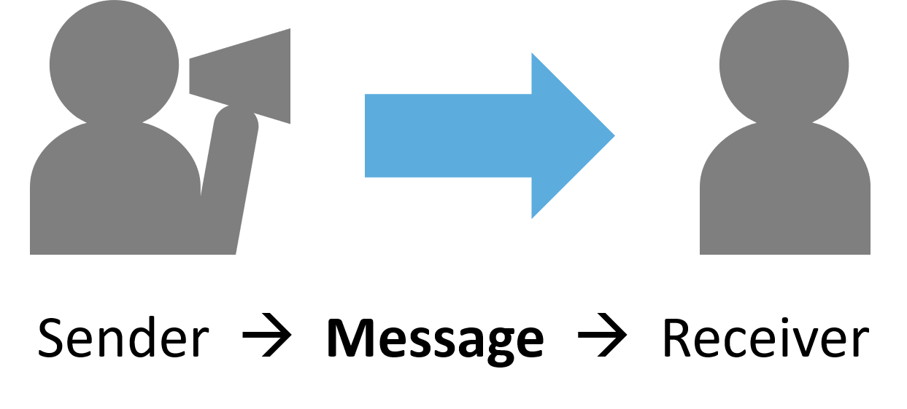
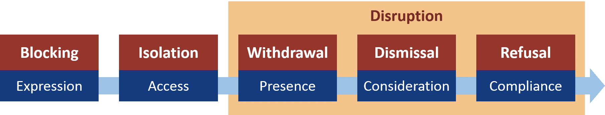

Opinions vary! Listening means different things to different people. When someone says listening has not occurred, there are several possible interaction types. This theory describes listening as a process capturing the extent of message transmission and acceptance between a sender and receiver.
Listening interactions can include various stages. All are not always necessary, but an unambiguous listening interaction includes every stage. A sender is able to express a message, with mutual access to the receiver; the listener is willingly present in this interaction, considers the message content, and perhaps complies by changing their attitude, beliefs, or behaviour.
Each has a non-listening counterpart: these interactions hinder the extent of message expression, transmission, or acceptance. A sixth non-listening type, disruption, aims to stop others from listening. Disruptive non-listeners can prompt others who are present to withdraw; persuade those who might consider a message to dismiss it; and lead others to refuse requests rather than comply.
Click on any of the bars below to learn more about each non-listening type:
In blocking, a message is halted at its source. A would-be message sender feels disempowered and held back from expression. The sender in this situation feels a lack of control or autonomy. The source of the blocking force can range from external (threats, etc.) to a more internal holding back in response to circumstances with negative outcomes for expression. An external blocking force may not be overtly visible to observers.
— participant quote —
I was very guarded… Anytime I tried to tell her something, she’d steal my idea, or wouldn’t give me credit, or just didn’t want to hear it.
In isolation, disconnectivity in a communication network prevents mutual access for sender-receiver communication. The sender expresses a message, but the message fails to reach a certain would-be receiver. No engagement is possible as a result. Perceptions of these situations vary on who ought to have message access, and who is responsible to facilitate that access.
— participant quote —
People would be talking about it but I never paid any attention. I never had any interest in it… and it didn’t interest me to know anything about it.
In withdrawal, a message receiver hears a message, but does not maintain presence. The message is expressed with mutual access, but the receiver chooses to assert limited power over self and withdraw. By doing this, they disengage from a listening role and terminate the interaction. Withdrawal is perceived as a non-listening, low-effort option in communication settings.
— participant quote —
It totally turned me off, their behaviour. I figured: I can’t be listening to you because you’re not making any sense.
In dismissal, a message receiver is present to receive a message. They give a response but enagage only superficially; they do not give true consideration to message content, and they respond by disregarding or rejecting the message. By doing this the receiver asserts power over the message sender, who feels unheard. Receivers who dismiss a message feel that their response is reasonable or justified; dismissed senders see it as disrespectful.
— participant quote —
Because they might have an engineering degree… they’re like, “Well I'm more educated than those people, so whatever, I'll play the game.”
In refusal, a message receiver hears a message and engages more fully, giving consideration to message content and a good-faith response. The message sender may have expectations for change, however, and the receiver (in a position of power to comply or not) stops short of actual compliance with one or more expectations. The message receiver perceives their own response as thoughtful consideration.
— participant quote —
She was angry. [I think] she felt like she wasn’t getting heard. And they weren’t listening to her and they weren’t stopping the procedure.
Disruption falls outside the normal (non)listening continuum. In disruption, communication between a sender and receiver is disrupted by a third party. Disruption aims to increase withdrawal, dismissal, and refusal by message receivers. The disruptive non-listener feels disempowered, and their actions are a power play: a desperate effort to wrest more control in a situation where they feel little or none. Disruption is unambiguously seen as rude or aggressive; perceptions vary on whether it is justified by the circumstances.
— participant quote —
I was at the point where if he told one more half-story, I was either going to laugh—or get up and tell him he was full of shit.